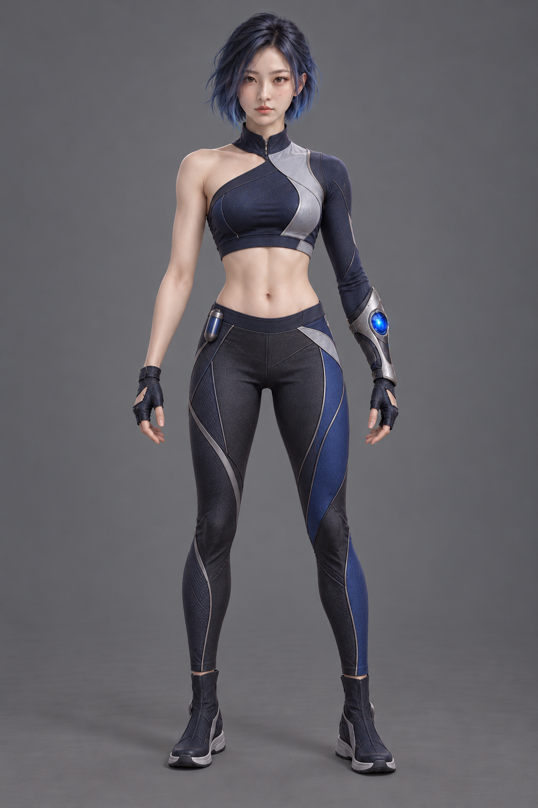
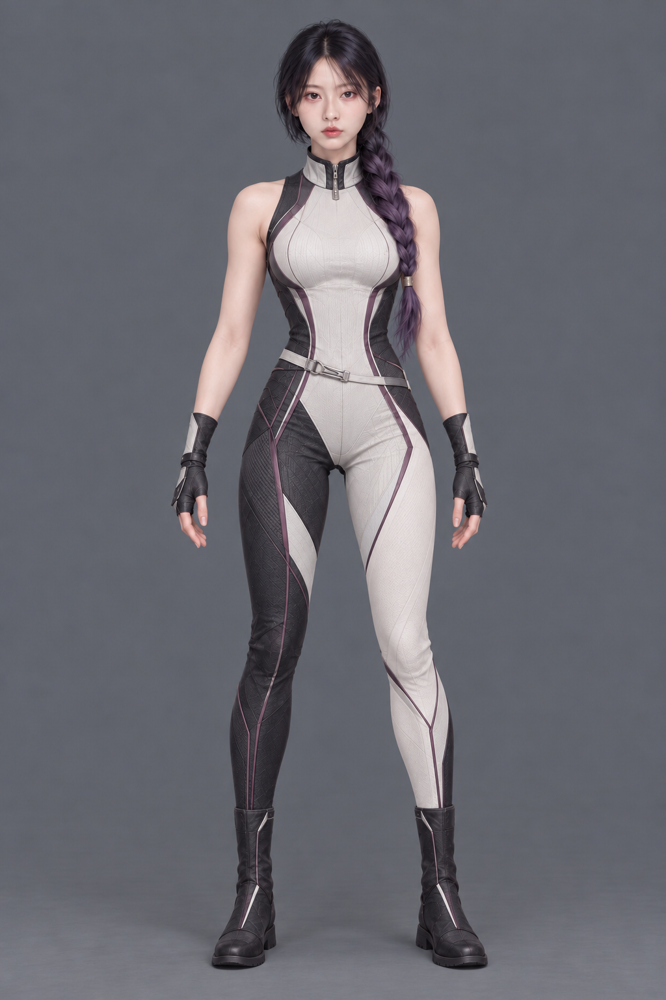
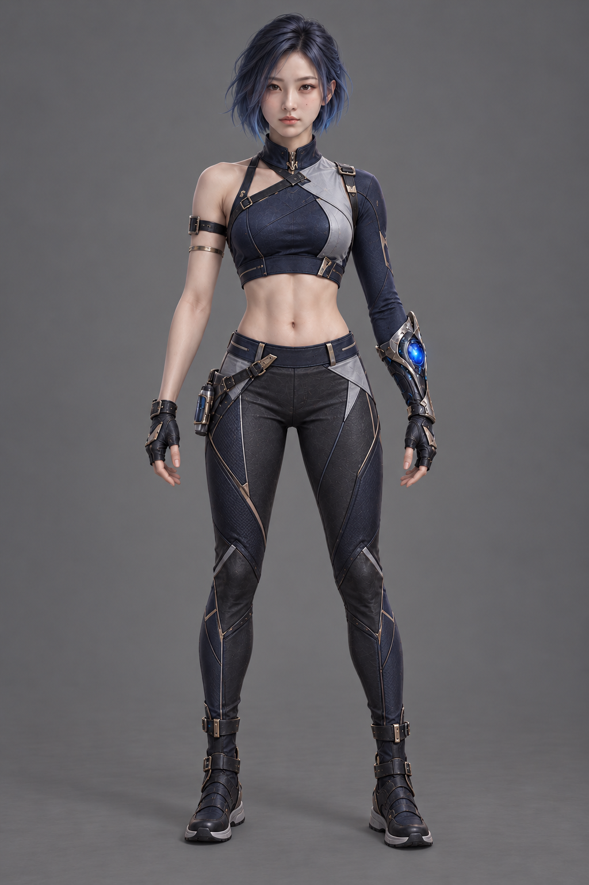
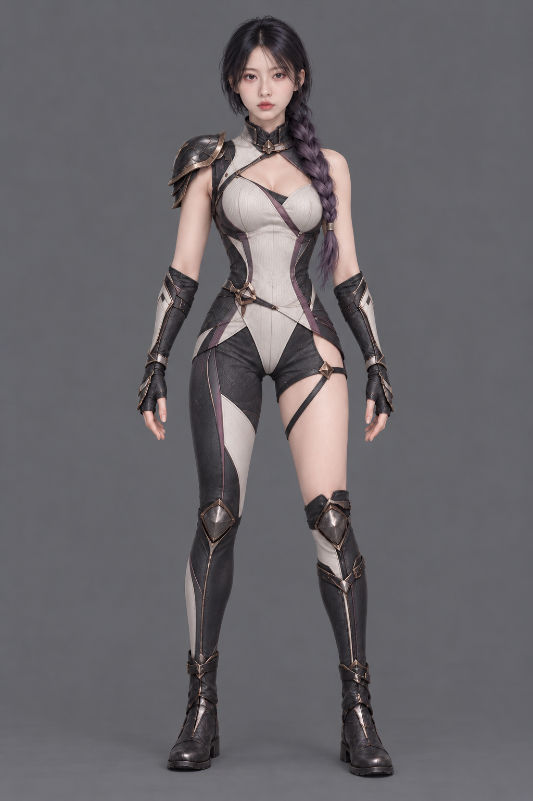

변성술사 · 푸른 단발 / B

확정한 서로 다른 얼굴·푸른 단발·보라색 옆땋기를 유지하고, 레깅스와 기능성 보디슈트로 의상을 바꿨습니다.
변성술사는 크롭 상의·복근·긴 레깅스, 창기사는 복부를 덮는 밝은 보디슈트·서로 다른 다리 색 패널입니다.


레깅스에 금속 장비를 일부 섞은 첫 비교안입니다. 창기사의 한쪽 허벅지와 상단 가슴선 구성이 다릅니다.

